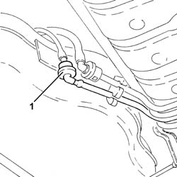
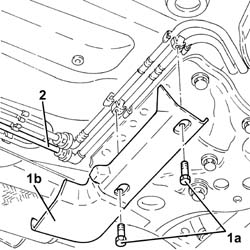
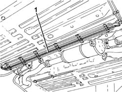

1040B34 intermediate fuel delivery hose r r
- Path
- Procedures > 10 ENGINE > 1040 FUEL TANK AND PIPES > 1040B fuel supply/return circuit pipe > 1040B34 intermediate fuel delivery hose r r
- Kind
- repair procedure (removal / refitting; the operation number is the code)
- Applies to
- engines: 1.9 JTD 16v; all production periods
- Interactive page
- https://sloeber94.github.io/elrnDB-a156/en/#/3237860
Applies to: engines: 1.9 JTD 16v; all production periods
 Removing
Removing
 Refitting
RefittingPosition the vehicle on the ramp.
1. Disconnect the quick-release connector for the front fuel supply pipe , rear fuel supply pipe side.

Applies to: engines: 1.9 JTD 16v; all production periods
1. Undo bolts (1a) and remove protection (1b).
2. Disconnect the rapid attachment for the rear fuel supply pipe, front fuel supply pipe side.

Applies to: engines: 1.9 JTD 16v; all production periods
1. Release the fuel supply pipe from the underbody fastenings and remove.

Applies to: engines: 1.9 JTD 16v; all production periods
Refitting
RemovingRefit the intermediate fuel supply pipe in its seating and secure it with the clips under the bodyshell.
Connect the rapid attachment for the rear fuel supply pipe, front fuel supply pipe side.
Place the protection back in its housing and secure it using the bolt.
Connect the quick-release connector for the front fuel supply pipe, rear fuel supply pipe side.
Remove the car from the ramps.